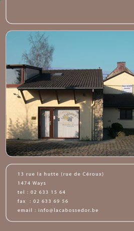

|
Sa fabrication
On vérifie si les fèves sont saines, bien fermentées et bien séchées.
Si elles n'ont pas souffert du transport, on les stocke dans des silos.
C'est un premier contrôle de qualité, il y en aura beaucoup d'autres.
Une première fois, on nettoie les fèves.
Généralement, cette opération se fait avec un conduit aspirant qui retire la poussière, le bois, le sable accumulés depuis la cueillette.
L'étape suivante, la torréfaction, est semblable à celle du café, de l'orge, des amandes ou des noisettes. Un maître-rôtisseur examine la torréfaction à l'aide de sondes. Il contrôle le degré de cuisson. C'est un travail qui est souvent automatisé. Son but est d'épanouir l'arôme. La cuisson est plus ou moins longue selon qu'il s'agit de poudre à l'arôme accentué ou de tablettes à l'arôme plus subtil.
A titre d'exemple, pour un grand four de 3 mètres, on cuit a 150°C pendant 25 à 50 minutes. Par cette opération, on rend aussi plus friable l'enveloppe extérieure de la fève. Elle sera plus facile à détacher.
Dans le concassage, on réduit les fèves en particules de 2 à 3 mm. Grâce à un tamis, on récupère les pelures qui serviront à diverses industries agro-alimentaires. Le résultat du concassage s'appelle le nibs ou le grué. Les nibs passent alors à travers trois cylindres successifs, les moulins, où on les broie. Le tissu cellulaire des fèves, qui contient 50% de beurre de cacao, se déchire et libère ce beurre. Il se liquiéfie. De solide, le grué devient donc liquide et on l'appelle la pâte de cacao, suspension de substances cacaotées dans du beurre de cacao.
A ce moment-là, on se trouve devant deux possibilités: obtenir de la poudre de chocolat ou du chocolat. |
 |
|
|